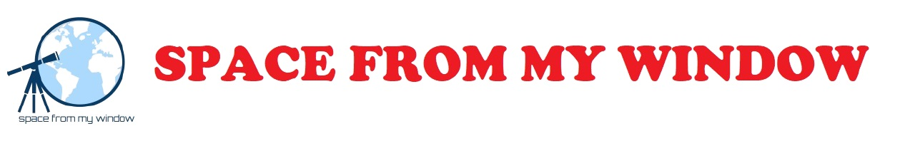
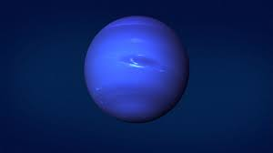

Planets
There are more planets than stars in our galaxy. The current count orbiting our star: eight.
The inner, rocky planets are Mercury, Venus, Earth and Mars. The outer planets
are gas giant Jupiter and Saturn and ice giants Uranus and Neptune.
Interesting Planet Facts
Mecury– The smallest and fastest planet, it zips around the Sun in only 88 Earth days.
Venus– Venus’ thick atmosphere makes it the hottest planet in our solar system.
Earth– The only planet in our solar system with liquid water on the surface.
Mars– Mars was a wet and warm planet billions of years ago.
Jupiter– The largest planet, its dark red spot is a storm larger than Earth.
Saturn– Saturn has the brightest, most massive and most complex ring system of any planet.
Uranus – Uranus is tipped on its axis by almost 90-degrees.
Neptune– Neptune was the first planet discovered through mathematical calculations, rather than observation.
Mercury
 The smallest planet in our solar system and nearest to the Sun, Mercury is only slightly larger than Earth's Moon.
From the surface of Mercury, the Sun would appear more than three times as large as it does when viewed from Earth,
and the sunlight would be as much as seven times brighter. Despite its proximity to the Sun, Mercury is not the hottest
planet in our solar system – that title belongs to nearby Venus, thanks to its dense atmosphere.
Did You Know?
The smallest planet in our solar system and nearest to the Sun, Mercury is only slightly larger than Earth's Moon.
From the surface of Mercury, the Sun would appear more than three times as large as it does when viewed from Earth,
and the sunlight would be as much as seven times brighter. Despite its proximity to the Sun, Mercury is not the hottest
planet in our solar system – that title belongs to nearby Venus, thanks to its dense atmosphere.
Did You Know?
Because of Mercury's elliptical—egg-shaped—orbit and sluggish rotation, the morning Sun appears to rise briefly, set and rise again from some
parts of the planet's surface. The same thing happens in reverse at sunset.
Venus
Venus is the second planet from the Sun and our closest planetary neighbor. Similar in structure and size to Earth, Venus spins slowly
in the opposite direction from most planets. Its thick atmosphere traps heat in a runaway greenhouse effect, making it the hottest planet in our solar
system with surface temperatures hot enough to melt lead. Glimpses below the clouds reveal volcanoes and deformed mountains.
Venus is named for the ancient Roman goddess of love and beauty, who was known as Aphrodite to the Ancient Greeks.
Size and Distance
With a radius of 3,760 miles (6,052 kilometers), Venus is roughly the same size as Earth — just slightly smaller.
From an average distance of 67 million miles (108 million kilometers), Venus is 0.7 astronomical units away from the Sun. One astronomical unit
(abbreviated as AU), is the distance from the Sun to Earth. It takes sunlight 6 minutes to travel from the Sun to Venus.
Earth
Our home planet is the third planet from the Sun, and the only place we know of so far that’s inhabited by living things. While Earth is only the fifth
largest planet in the solar system, it is the only world in our solar system with liquid water on the surface. Just slightly larger than nearby Venus,
Earth is the biggest of the four planets closest to the Sun, all of which are made of rock and metal.
The name Earth is at least 1,000 years old. All of the planets, except for Earth, were named after Greek and Roman gods and goddesses. However,
the name Earth is a Germanic word, which simply means “the ground.”
Size and Distance
With a radius of 3,959 miles (6,371 kilometers), Earth is the biggest of the terrestrial planets, and the fifth largest planet overall.
From an average distance of 93 million miles (150 million kilometers), Earth is exactly one astronomical unit away from the Sun because one
astronomical unit (abbreviated as AU), is the distance from the Sun to Earth. This unit provides an easy way to quickly compare planets' distances
from the Sun.
It takes about eight minutes for light from the Sun to reach our planet.
Quick Facts
Day-23.9 hours
Year-365.25 days
Radius-3,959 miles | 6,371 kilometers
Planet Type-Terrestrial
Moons-1
Mars
The fourth planet from the Sun, Mars is a dusty, cold, desert world with a very thin atmosphere.
This dynamic planet has seasons, polar ice caps, canyons, extinct volcanoes, and evidence that it was even more active in the past.
Mars is one of the most explored bodies in our solar system, and it's the only planet where we've sent rovers to roam the alien landscape. NASA currently
has three spacecraft in orbit, and it has one rover and one lander on the surface. NASA launched the next-generation Perseverance rover to Mars on July 30,
2020. India and ESA have spacecraft in orbit above Mars. These robotic explorers have found lots of evidence that Mars was much wetter and warmer, with a
thicker atmosphere, billions of years ago.
Jupiter
Jupiter has a long history surprising scientists—all the way back to 1610 when Galileo Galilei found the first moons beyond Earth. That discovery changed
the way we see the universe.Fifth in line from the Sun, Jupiter is, by far, the largest planet in the solar system – more than twice as massive as all the
other planets combined.Jupiter's familiar stripes and swirls are actually cold, windy clouds of ammonia and water, floating in an atmosphere of hydrogen
and helium. Jupiter’s iconic Great Red Spot is a giant storm bigger than Earth that has raged for hundreds of years.
One spacecraft — NASA's Juno orbiter — is currently exploring this giant world.
Saturn
Saturn is the sixth planet from the Sun and the second largest planet in our solar system.
Adorned with thousands of beautiful ringlets, Saturn is unique among the planets. It is not the only planet to have rings—made of chunks of ice and rock—but none are as spectacular or as complicated as Saturn's.
Like fellow gas giant Jupiter, Saturn is a massive ball made mostly of hydrogen and helium.
Uranus
 The first planet found with the aid of a telescope, Uranus was discovered in 1781 by astronomer William Herschel,
although he originally thought it was either a comet or a star.
It was two years later that the object was universally accepted as a new planet, in part because of observations
by astronomer Johann Elert Bode. Herschel tried unsuccessfully to name his discovery Georgium Sidus after King George III.
Instead the scientific community accepted Bode's suggestion to name it Uranus, the Greek god of the sky, as suggested by Bode.
The first planet found with the aid of a telescope, Uranus was discovered in 1781 by astronomer William Herschel,
although he originally thought it was either a comet or a star.
It was two years later that the object was universally accepted as a new planet, in part because of observations
by astronomer Johann Elert Bode. Herschel tried unsuccessfully to name his discovery Georgium Sidus after King George III.
Instead the scientific community accepted Bode's suggestion to name it Uranus, the Greek god of the sky, as suggested by Bode.
Neptune

Dark, cold and whipped by supersonic winds, ice giant Neptune is the eighth and most distant planet in our solar system.
More than 30 times as far from the Sun as Earth, Neptune is the only planet in our solar system not visible to the naked eye
and the first predicted by mathematics before its discovery. In 2011 Neptune completed its first 165-year orbit since its discovery in 1846.
NASA's Voyager 2 is the only spacecraft to have visited Neptune up close. It flew past in 1989 on its way out of the solar system.